Giga aanrader. Professioneel, heel straf in haar job, en superleuke ervaring met vrolijke babbels. Saltje weet wat ze doet, zowel op professioneel als op menselijk vlak.
Julie CallaertGoogle-review
Tattoo art, op maat getekend
Lichte hand, scherpe lijn.
Elke tattoo wordt hier voor één persoon getekend. Fijne lijnen, bloemen, dieren, namen of dat ene symbool dat alleen jij begrijpt. Komt je eerste tattoo eraan? Dan babbelen we eerst rustig.
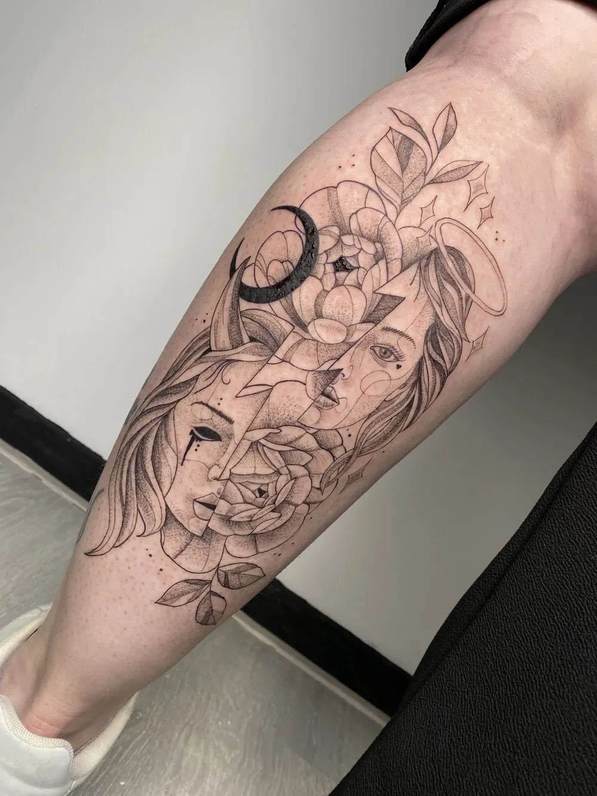
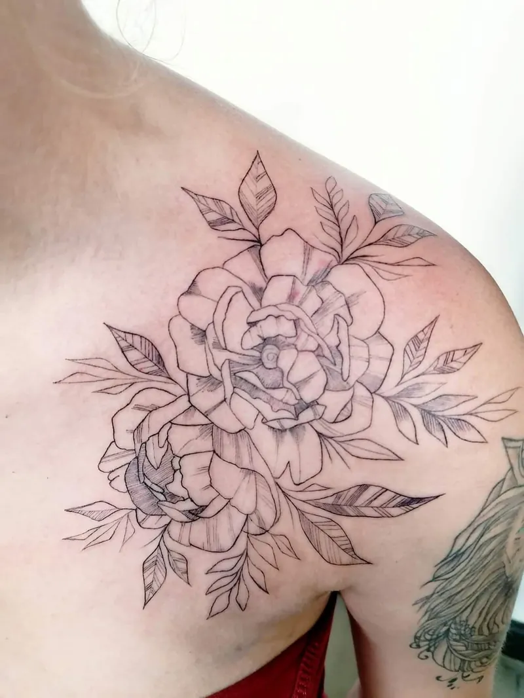
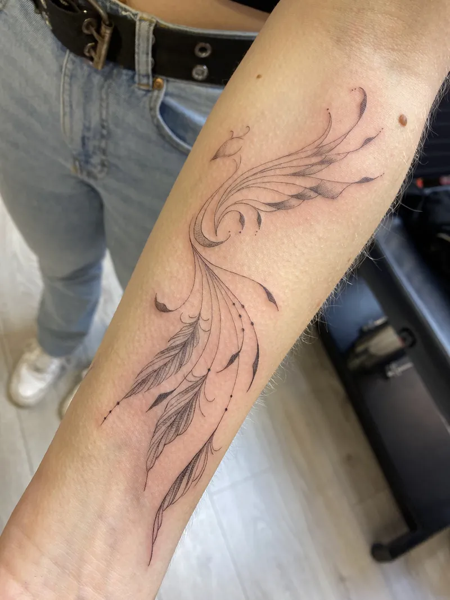
4,9★★★★★48 reviews
op Google
op Google
alles eigen werk
- Fine lineBloemen, veren en tekst in dunne lijnen.
- Black & greyDieren, gezichten en rozen met zachte schaduw.
- Klein en persoonlijkEen naam, een datum, een pinky promise.
- BijwerkenEen oudere tattoo die een opfrisser kan gebruiken.
Uit het schetsboek
Getekend voor één iemand, gezet voor altijd.
Je vindt hier geen catalogus om uit te kiezen. Elk stuk is samen met de klant uitgewerkt, van een klein woordje tot een ontwerp over de hele kuit.
en ja, kleur kan ook ↓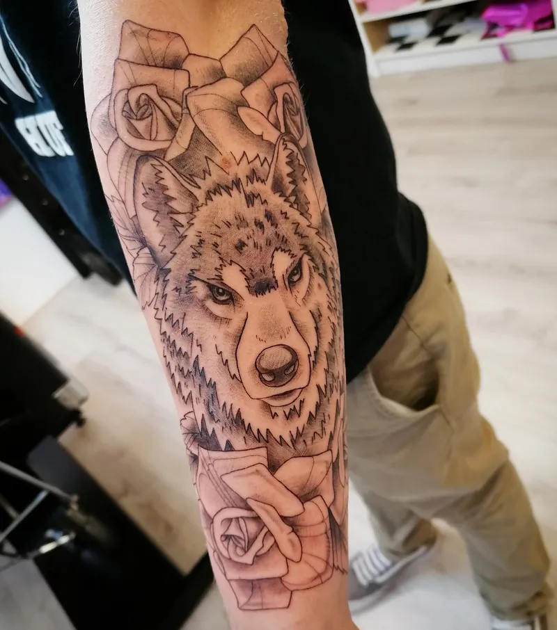
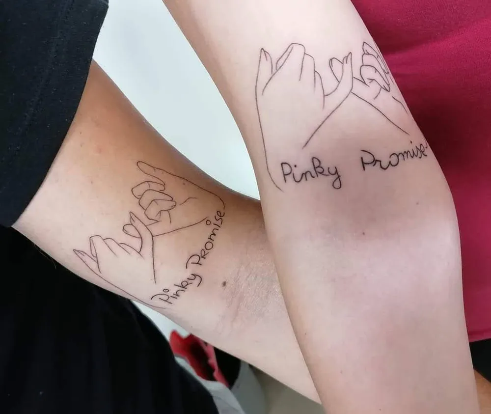
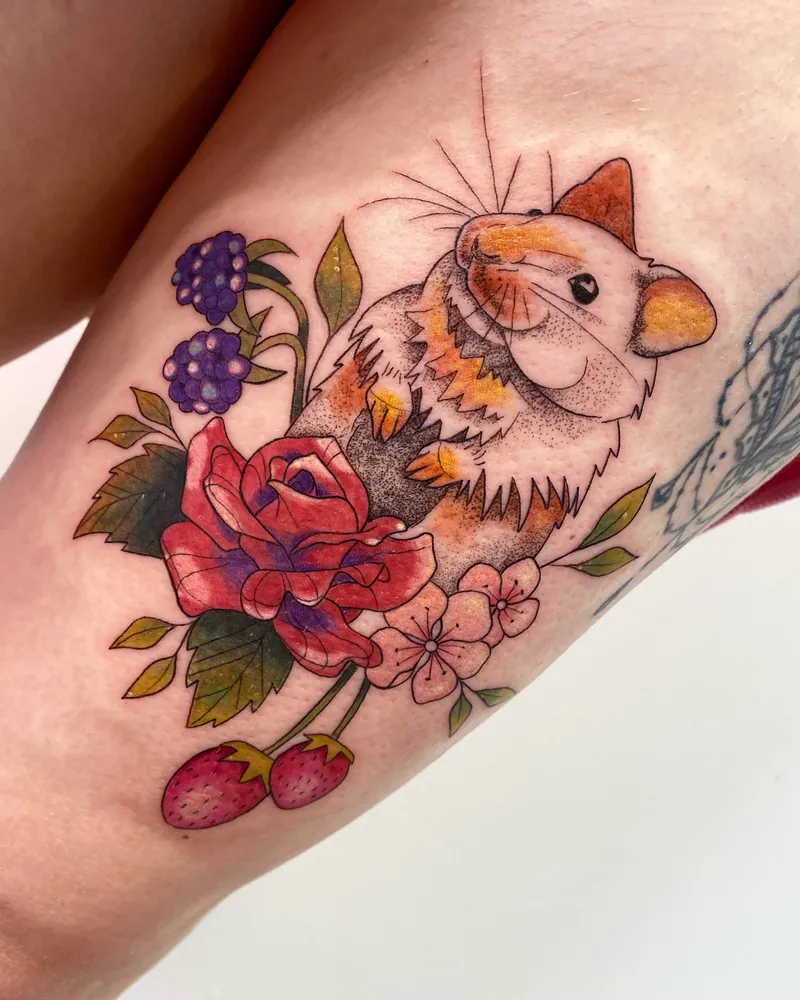
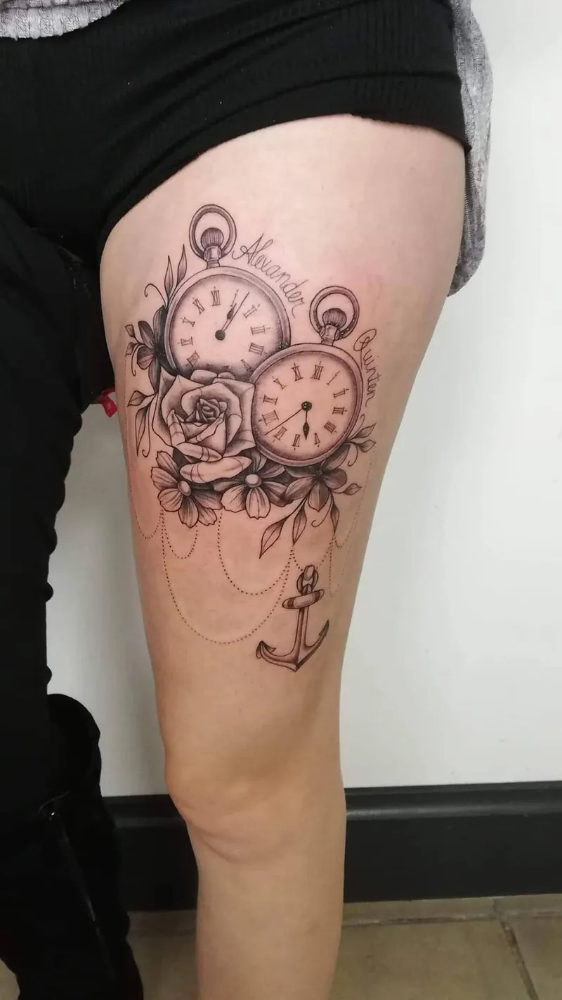
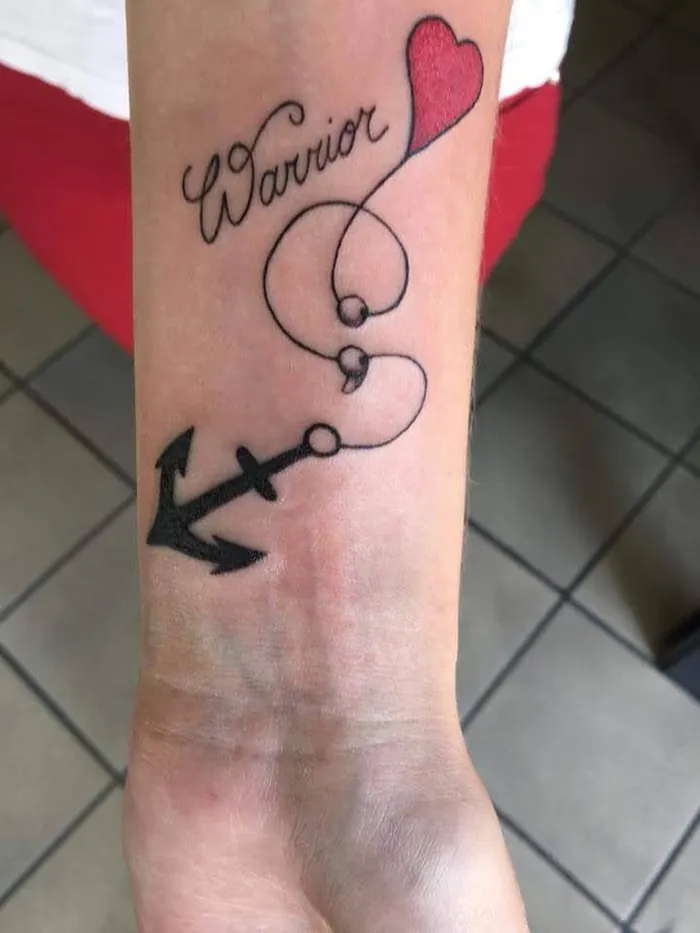
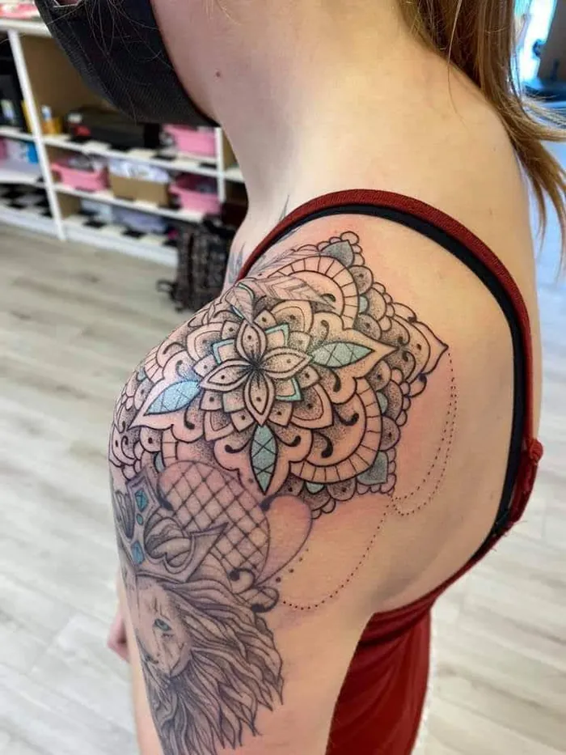
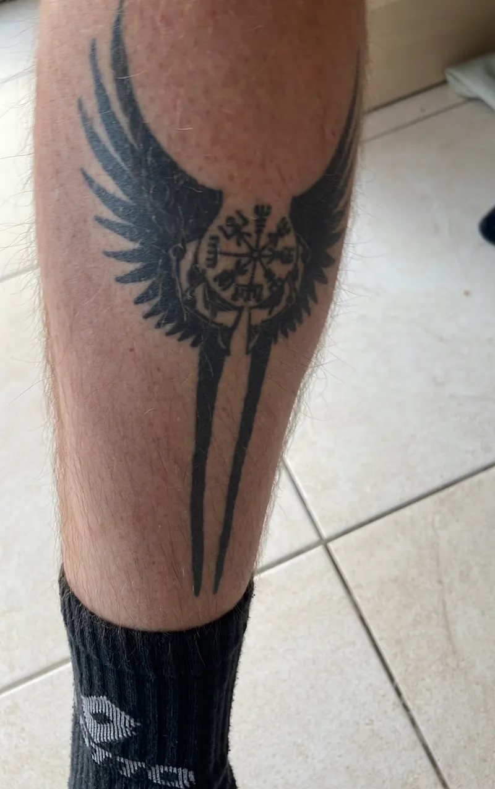
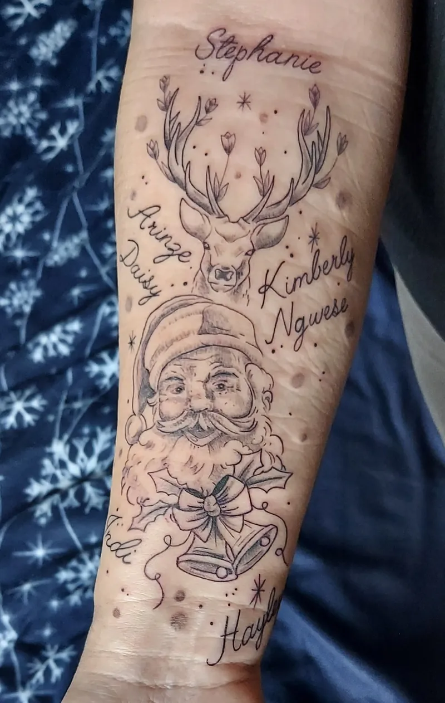
Heb je iets gezien dat je mooi vindt? Stuur het mee als voorbeeld, dan tekenen we er jouw versie van.
Je eerste tattoo
Zenuwen mag je gewoon meebrengen.
Bijna iedereen is wat gespannen de eerste keer. Daarom nemen we er de tijd voor: eerst een babbel, dan je ontwerp, en pas als het voor jou goed voelt, beginnen we.
- Een lichte handRustig zetten, zonder haast.
- Proper en hygiënischAlles netjes, elke keer opnieuw.
- Een vrolijke babbelDat helpt meer dan je denkt.
Ik heb een week geleden mijn eerste tattoo laten zetten hier! (…) Ook de tattoo laten zetten deed helemaal geen pijn. Ik kan niks anders zeggen dan dat ik ontzettend tevreden ben !!
E
Elien SchroyenGoogle-review, eerste tattoo
Reviews
4,9 /5
48 mensen lieten al een review achter op Google. Een paar ervan, zoals ze geschreven zijn.
Alle reviews op GoogleMeerdere keren al geweest, en ik zal blijven gaan, niet alleen een top tatoeur maar ook een super toffe madam!
Kimberly CreemersGoogle-reviewHeel blij met mijn tattoo. Super duidelijke fine line! Heel vriendelijke mensen. TOP ervaring!
Carmen NotenGoogle-reviewIk heb vandaag hier mijn Tattoo laten herstellen/ bijwerken en ik ben er super tevreden over. Het zijn professionele mensen die je een welkom gevoel geven en ze weten wat ze doen.
Jan-WillemGoogle-review
Afspraak
Stuur je idee gewoon door.
Een foto, een krabbel of een paar woorden.
Alles helpt. Laat ook weten waar je hem wil en hoe groot ongeveer, dan zoeken we samen een moment dat past.
- 01Wat je wil laten zetten
- 02Waar op je lichaam
- 03Ongeveer hoe groot
- 04Een voorbeeld, als je er een hebt
Openingsuren
| Maandag | gesloten |
| Dinsdag | 10u tot 17u |
| Woensdag | 10u tot 17u |
| Donderdag | 10u tot 17u |
| Vrijdag | 10u tot 17u |
| Zaterdag | 10u tot 17u |
| Zondag | gesloten |
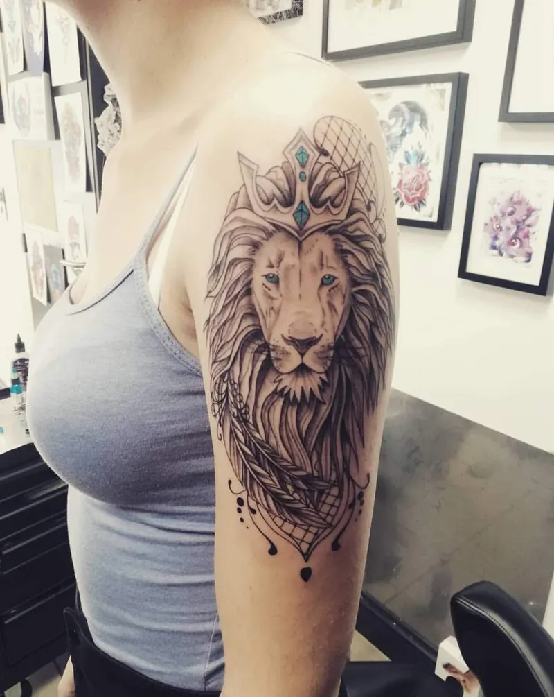
leeuw, bovenarmContant betalenHandig om op voorhand te weten.
RolstoeltoegankelijkMet een aangepaste parkeerplaats.